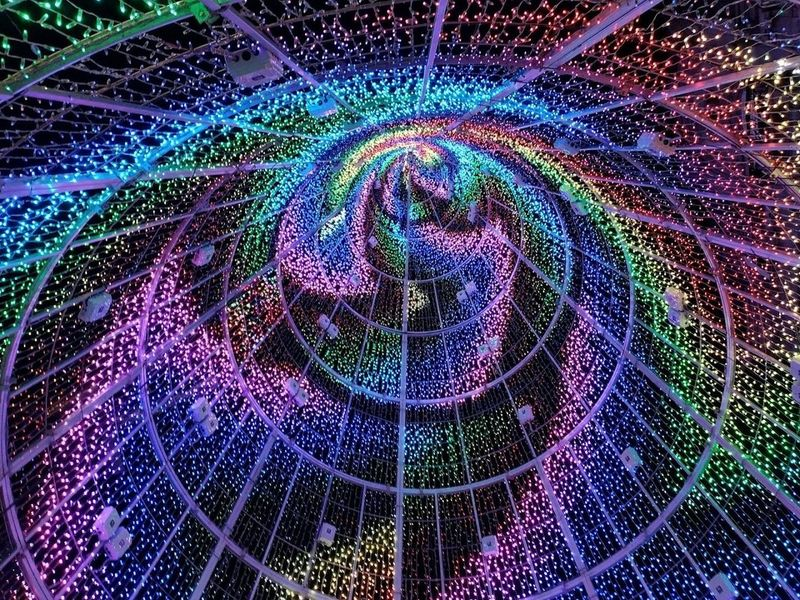
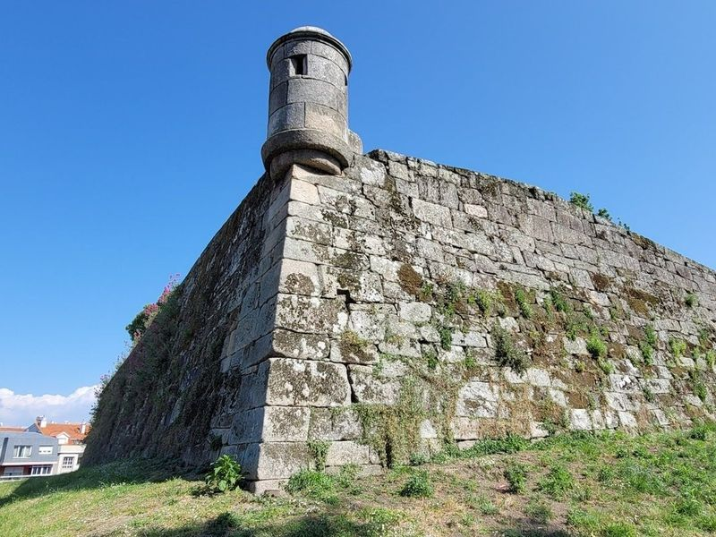
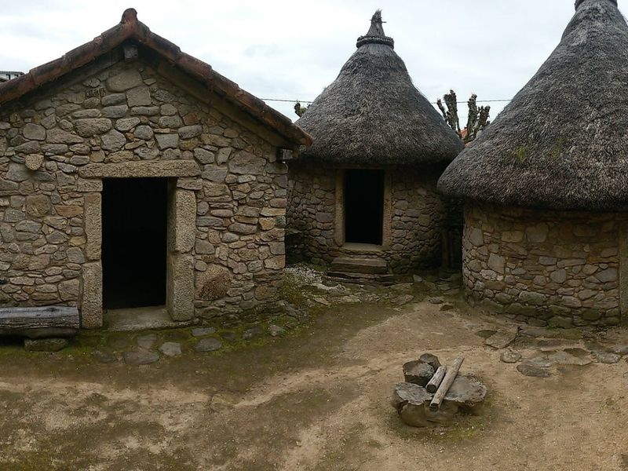
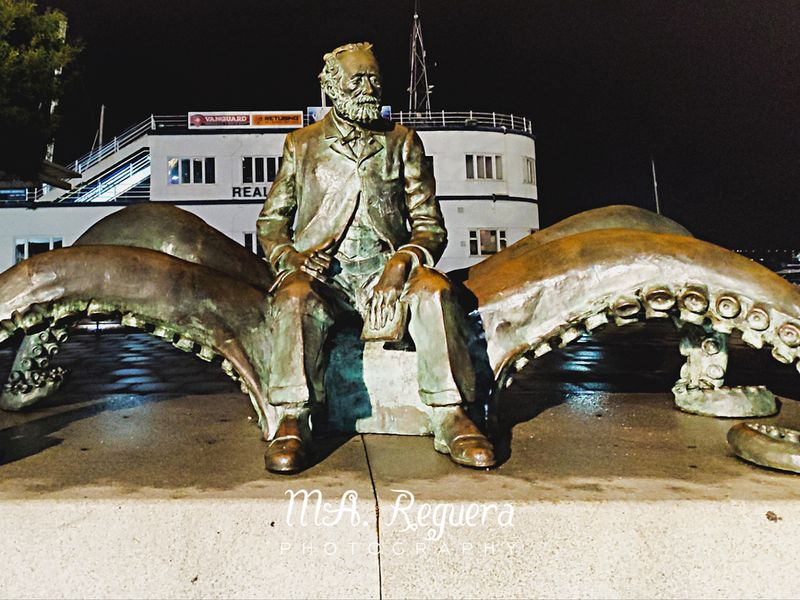
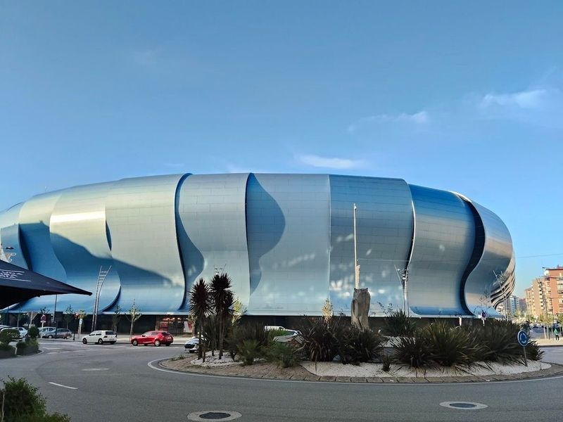
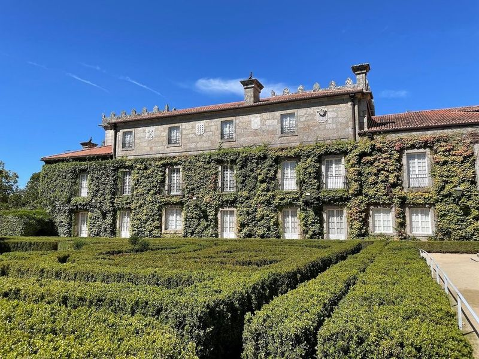
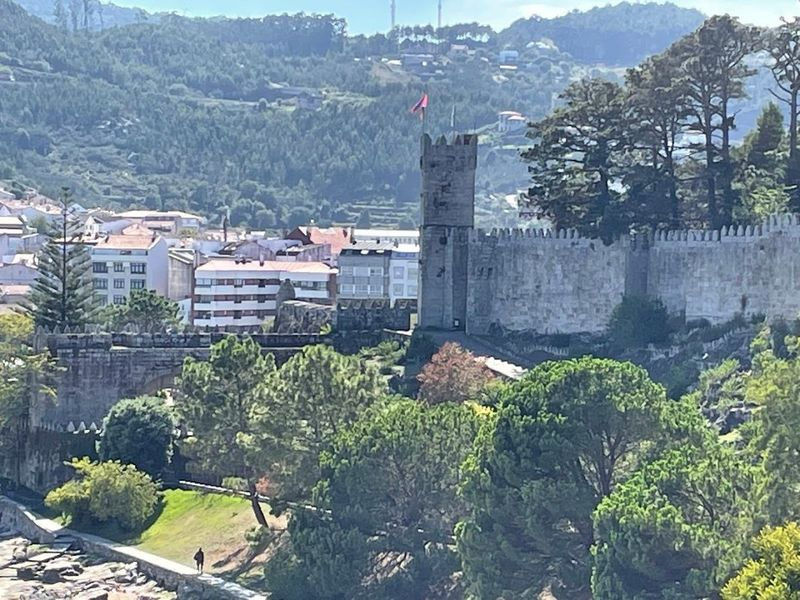
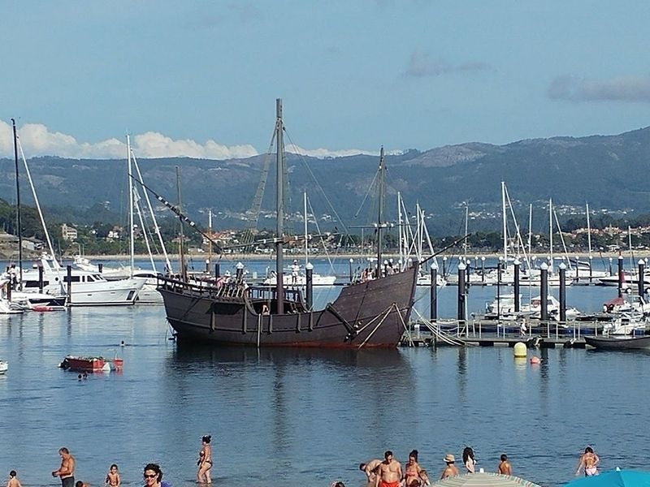
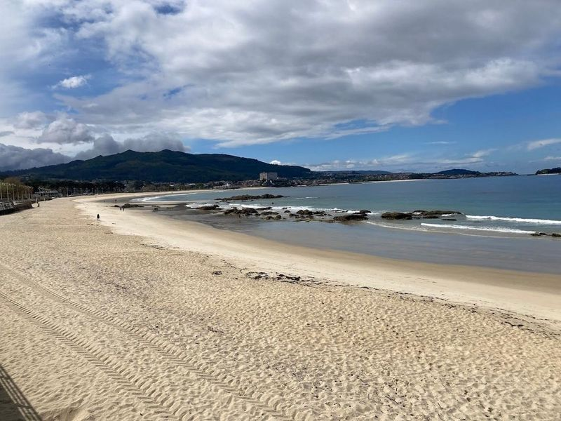
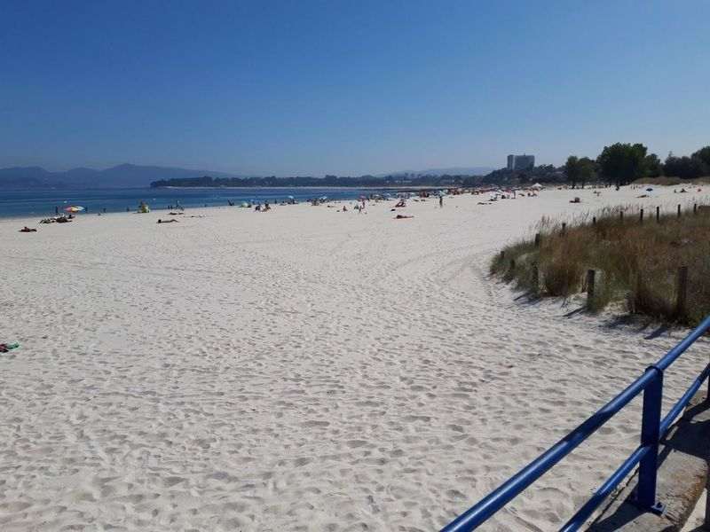

Explore Vigo
A Brief History
Vigo grew at a sheltered Atlantic inlet that Romans linked to their settlement on the Cíes Islands and that medieval Galician shipping later used for salt fish and emigration routes. The nineteenth century brought canning factories, shipyards, and a waterfront that still turns toward the Ría de Vigo. Franco-era industrial suburbs expanded around the old town, while the Castro de Vigo headland and fishermen's quarters in Berbés preserve earlier layers of port life in Spain's largest Galician city.
Attractions Map
Top Sights & Activities

O Sereo
O Sereo is a famous steel sculpture in Vigo, known as the 'Fish Man,' created by Francisco Leiro. It stands in Plaza Porta do Sol and represents Galician culture. The area around it is used for breakfast and people-watching, with a atmosphere. While some find the statue , others consider it ugly but still acknowledge its significance as a reference point in the city center.

Castelo de San Sebastián
Castelo de San Sebastián, also known as Fortaleza de San Sebastian, is a renowned 17th-century fortress in Vigo, built during the reign of Philip IV to safeguard the city. It offers fantastic panoramic views of the estuary and serves as a strategic vantage point for anticipating sea attacks. travellers can access it through hilly streets or by climbing up from the old town or Oliveira Square.

Castro de Vigo
Castro de Vigo is a pre-Roman settlement with circular thatch-roofed dwellings dating back to the 3rd century BCE. It has been partially reconstructed and offers limited opening hours for travellers to enjoy a decent view of the area. The site provides a fantastic opportunity for leisurely walks, offering peaceful and relaxing surroundings with panoramic views of Vigo from above. travellers can explore the area on foot or drive up halfway before strolling around.

Monumento a Jules Verne
In Vigo, Spain, the Monumento a Jules Verne is a attraction. The monument features a sculpture of the famous author sitting on the tentacles of a sea creature, inspired by his novel '20,000 Leagues Under the Sea,' which mentions the treasures of sunken galleons in the Bay of Vigo. Nearby, travellers can also take selfies with the El Sireno mermaid statue.

Estadio de Balaídos
Estadio de Balaídos is the home ground of RC Celta Vigo, also known as Celta. Situated in the Balaidos neighborhood just south of Vigo's city center, this stadium can accommodate 29,000 spectators. The ongoing renovation aims to modernize it gradually, with completed upgrades to the Grandstand stand and Rio area. Despite needing further improvements, travellers appreciate its atmosphere and facilities. The stadium's location allows for easy access and minimal queues for amenities.

Parque de Castrelos
Parque de Castrelos, also home to Parque Quinones de Leon, is a must-visit destination in Vigo. The park offers gardens, a mansion, and various attractions for everyone to enjoy. It's a peaceful place with picturesque views and plenty of ruins to explore. travellers can admire old trees, a calm river, and birds while enjoying the shade on sunny days. There are amenities like a playground for kids and ample street parking available.

Castelo de Monterreal
Castelo de Monterreal is a fantastic fortress located on the seashore, serving as the main tourist attraction in Baiona. It is well-preserved and open to the public for free, offering different routes such as the fortress and wall paths. The wall route provides views of the Cies Islands. Accessing the walls may require a small fee, but it's worth it for picturesque views and access to a luxury hotel and restaurant.

Pozo da Aguada
in the captivating town of Baiona, Pozo da Aguada is a historical well that once quenched the thirst of the famous ship Ia Carabela Ia Pinta before its historic journey on March 11, 1493. This enchanting site not only offers a glimpse into the past but also serves as a gateway to local legends and folklore, including tales of supernatural beings like Trasnos and the Holy Company.

Praia de Samil
Praia de Samil is the largest and most popular beach in Vigo, Spain. This 1.2-km stretch of white sandy beach has been a local favorite since the late 1960s. It offers modern amenities such as public swimming pools, a skating rink, cafes, picnic areas, and public restrooms. The area also features a paved promenade with plenty of parking nearby. travellers can enjoy activities like beach volleyball and relax at tapas bars along the coast.

Playa del Vao
Playa del Vao is a popular beach in Vigo, known for its long stretch of golden sand and picturesque coastal landscape. It attracts a younger crowd who enjoy activities like soccer, windsurfing, and sailing. The powdery white sand and calm waters make it used for sunbathing and family outings. Nearby, Samil Beach offers an expansive shoreline and recreational areas for relaxation and water sports.